What this module does
WT Spa POS turns a POS Salon till into a spa till. It installs on two other modules and uses their records rather than keeping copies of its own:
- WT Salon Management holds the treatments (salon services), the therapists (employees), the rooms and stations, the time slots, the advance each treatment asks for, the double-booking guard and the commission rules.
- WT POS Salon puts the day's bookings on a board inside the Point of Sale till, loads a booking onto the bill and prints it on the receipt.
What the spa module adds on top: a room board that the till opens on, Book and Walk-in popups that pick a treatment, a therapist, a room and a free slot, the advance taken at booking and taken off the bill, therapist reviews, a receipt that reads Spa Treatment, and a Spa app in the back office that shows only the spa's side of the salon.
Because it uses the salon's records, everything the salon modules already report on (appointments, commission earnings, the Loyalty add-on's packages, gift cards and deposits) covers the spa too.
Before you start
You need Odoo 19 with Point of Sale, WT Salon Management and WT POS Salon. Installing WT Spa POS installs the two salon modules for you if they are missing.
Staff who work the spa till need two roles on their user: a Point of Sale role, and the Salon Receptionist role (or Manager). A cashier with no salon role cannot book, take an advance or record a review; the till tells them which role is missing.
Install with demo data and you get Serenity Day Spa as a company of its own: fourteen treatments in five categories, five therapists, eight rooms and stations, twenty five guests, a week of bookings, fifteen reviews and a till with two closed sessions and one open. The Administrator lands in the spa company; the salon demo company stays in the company switcher.
Your treatments
Open Spa > Treatments. A treatment is a salon service in a category marked Spa Treatments. The list shows only those; the salon's hair and nail services stay in the Salon app.
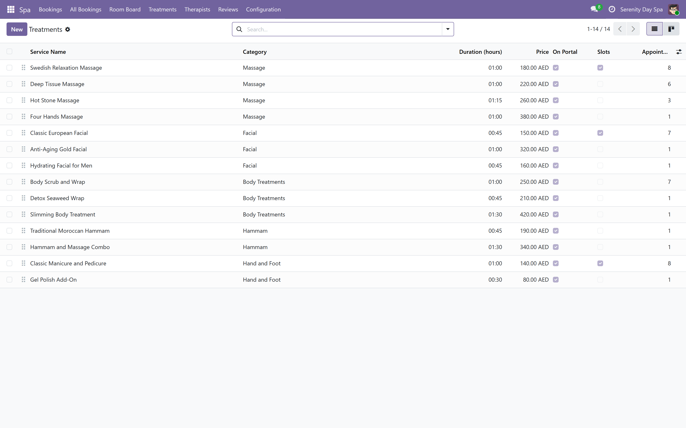
On a treatment you set:
- Price and Duration. The duration sets how long the therapist and the room are held.
- Rooms and Stations: where the treatment can be given. The Book popup only offers these rooms, and a time slot is only offered while one of them is free.
- Available Stylists: the therapists who give it. Leave empty for everyone.
- Book in Time Slots and the Slot Template, for a room that turns over at fixed times (10:00, 12:00, 15:00). Without a template the till offers a start every slot length through opening hours.
- Advance (%) or Advance (fixed): what the guest pays when booking. One or the other, not both.
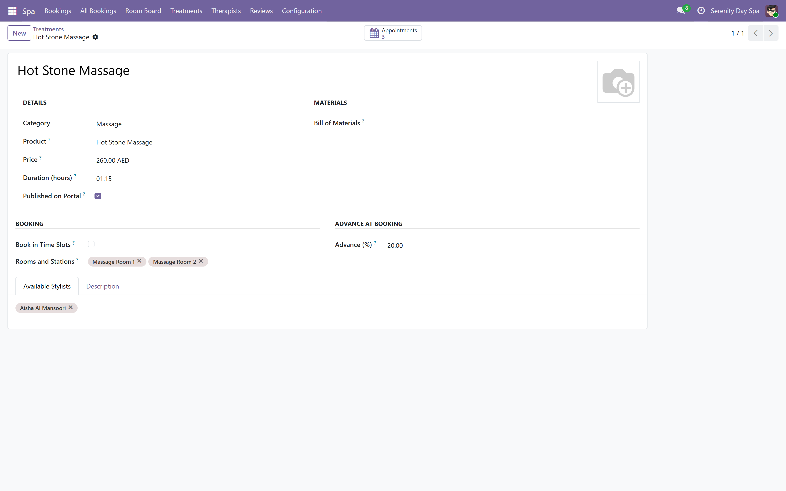
Categories live under Spa > Configuration > Treatment Categories. Tick Spa Treatments on any category whose services the spa till should offer.
Your therapists
Open Spa > Therapists. A therapist is an employee with Spa Therapist ticked on the Spa tab of the employee form. The card shows the average rating and how many reviews it comes from.
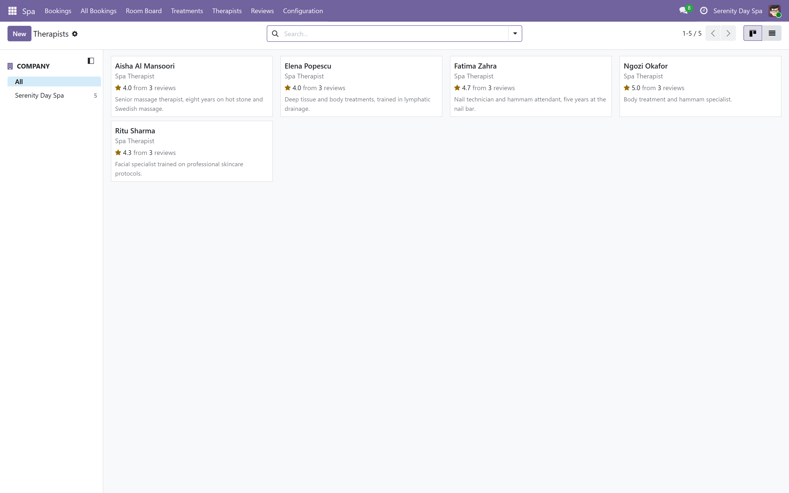
Commission is the salon's own: Spa > Configuration > Commission Rules, one rule per therapist, a percentage of the treatment or a fixed amount per treatment. It is worked out when the treatment is invoiced, the same way as for a stylist.
Your rooms and stations
Open Spa > Configuration > Rooms and Stations to add them, and Spa > Room Board to see them live. Each has a kind (room, station, chair), a short code for the till and the receipt, and a Capacity: a couples suite takes two guests at once, and the double-booking guard allows exactly that many overlapping bookings in it.
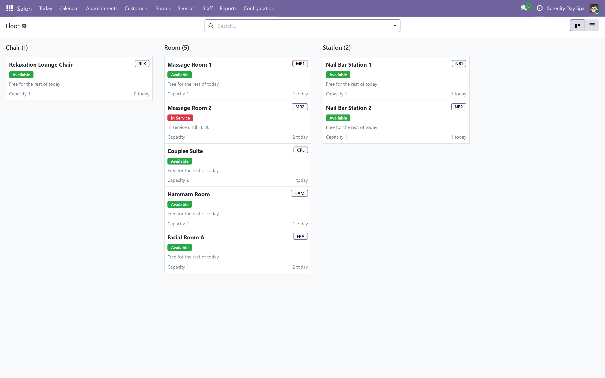
Turn a till into a spa till
Open the till's settings in Point of Sale and tick Spa Till. It turns on Salon Mode with it. Ask for a Review on Done opens the review popup whenever a treatment is marked Done on the board.
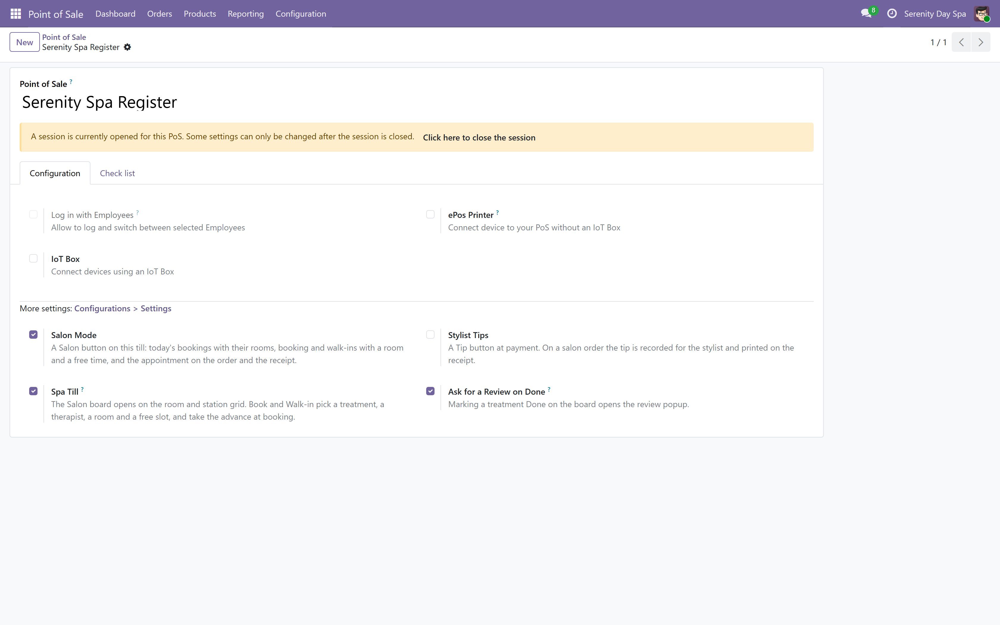
Opening the till: the room board
Open the register and press Salon in the till's top bar. A spa till opens on Rooms: every room and station, green when free, amber when the next booking is still to come today, red while a treatment is running. Under each room are the day's treatments in it. Pick another day at the top to see that day's bookings; the live colours are always about today.
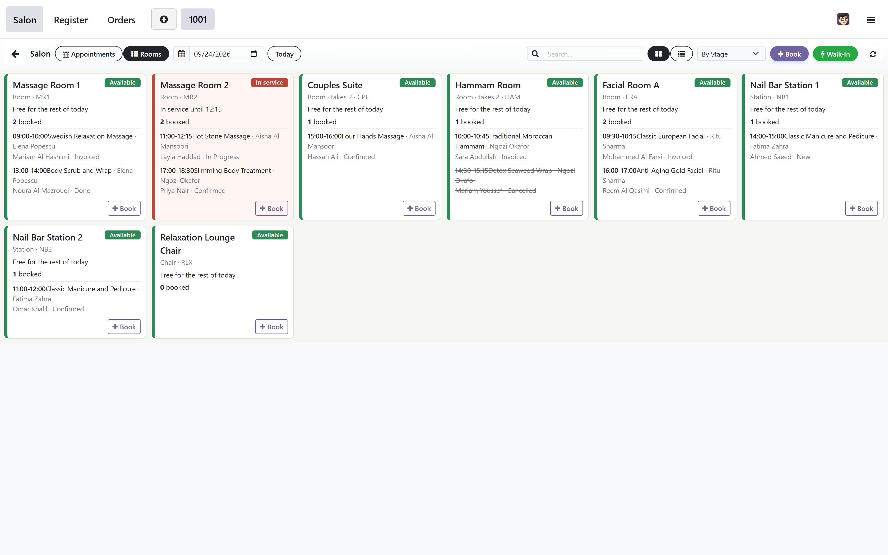
The same board works on a tablet.
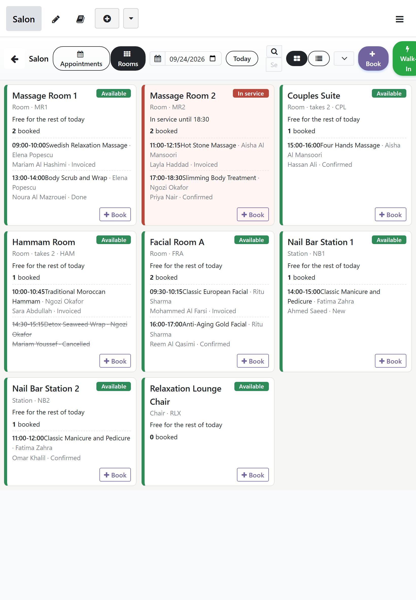
Booking a treatment
Press Book on a room, or Book at the top of the board.
- Pick the Treatment. Its length, price and advance are on the card.
- Pick the Day. Free times lists the starts where a therapist who gives the treatment and a room it is given in are both free. Picking a therapist or a room narrows the list; a therapist or room that is not free at the chosen time is greyed out.
- Find the Guest by name or phone, or type a new guest's name.
- Leave Take the advance now ticked if the guest pays the advance at booking.
- Press Book treatment.
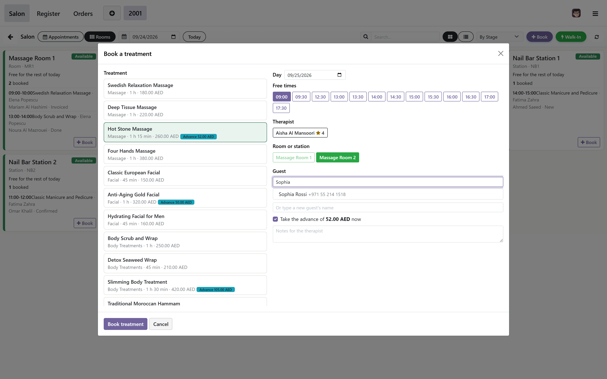
If another till took that therapist or room a moment earlier, the booking is refused with the salon's own message naming the booking in the way, and nothing is saved.
The advance
With Take the advance now ticked, the till opens an order of its own with one Treatment Advance line at the amount the treatment asks for. Take payment as usual. The booking card then shows Advance held.
A booking made without the advance shows Advance due and a money button on its card to take it later.
When the booking is loaded onto its bill, the advance comes off as a negative Treatment Advance line, so the guest pays only the rest.
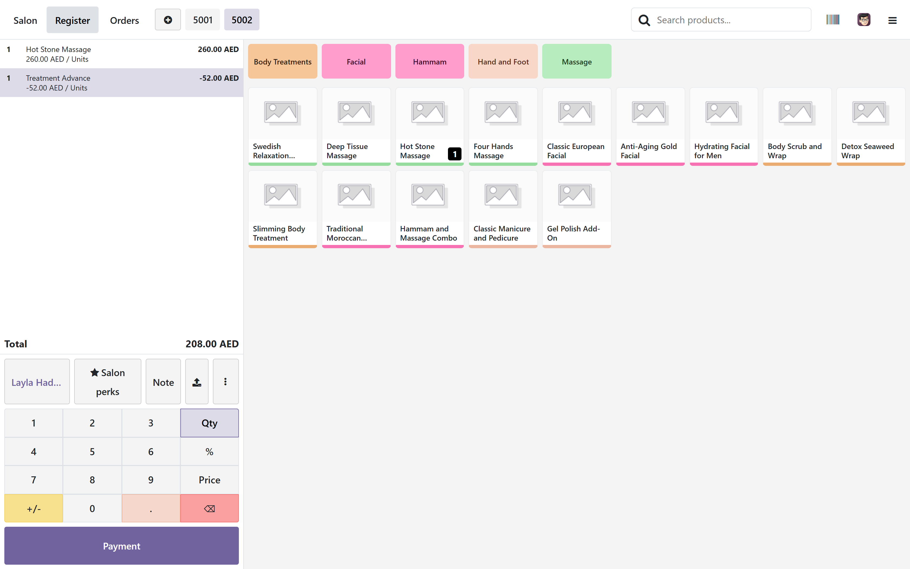
The server checks every advance when the till sends the order, and refuses the order rather than post money that does not add up:
- an advance can never be more than the treatment costs, and belongs to the guest who booked;
- the bill must take off exactly what was paid, once, on the bill for that treatment;
- a refund of an advance order releases the advance; an advance already taken off a bill cannot be refunded on its own until that bill is.
In the back office, the booking shows Advance Due (what the treatment asks for), Advance Collected (what the till took), Advance Settled By and Advance Held. These are kept apart on purpose.
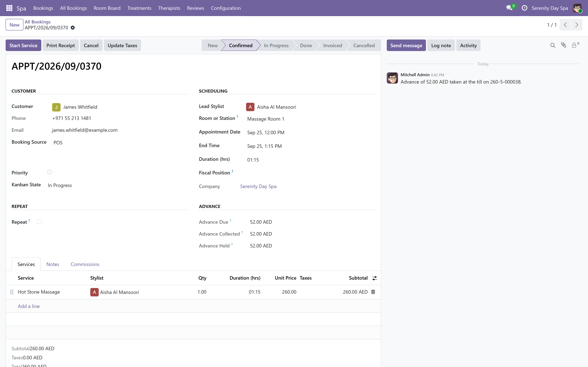
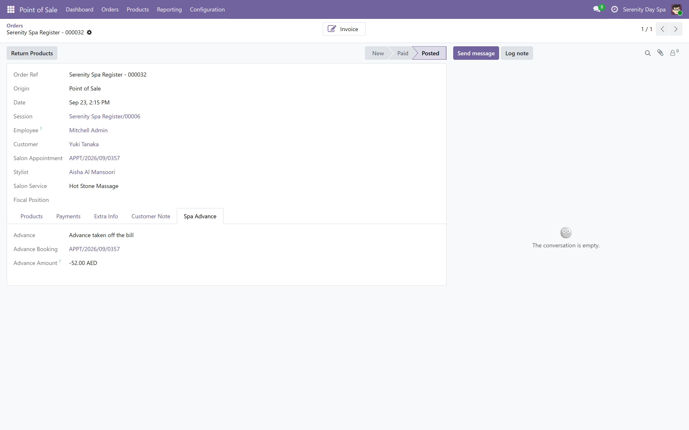
With the Salon Loyalty add-on (WT Enterprise Salon) installed, the advance is taken as the add-on's deposit instead, through its perks panel, and the add-on settles it on the bill. The spa till then never takes an advance of its own, so the two can never both be taken for one booking.
A walk-in
Press Walk-In. Pick the treatment; the popup offers only a therapist and a room free from now for the whole length of the treatment and picks the first of each. Press Start and ring up: the booking starts In Progress and lands on the order straight away.
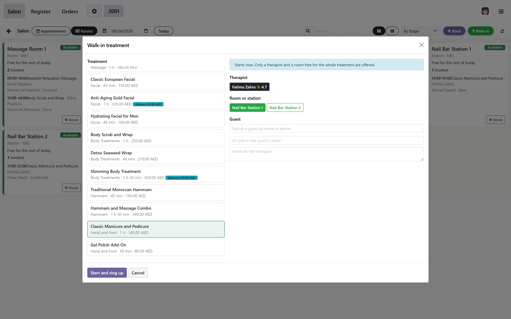
The day's bookings
Appointments on the board is POS Salon's own list of the day, with the spa's badges on each card: the room, the advance held or due, and Reviewed once the guest has left a review. Start, Done, Edit and Cancel work as they do on any salon till.
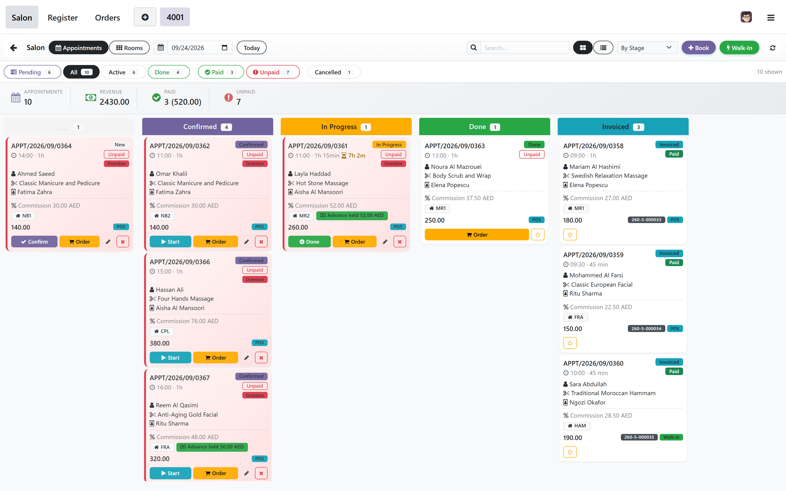
Taking payment and the receipt
Press Order on a card: the treatment and any advance held land on the order. Pay as usual. The receipt carries one salon block, headed Spa Treatment, with the booking reference, the time, the treatment, the therapist, the room and the length.
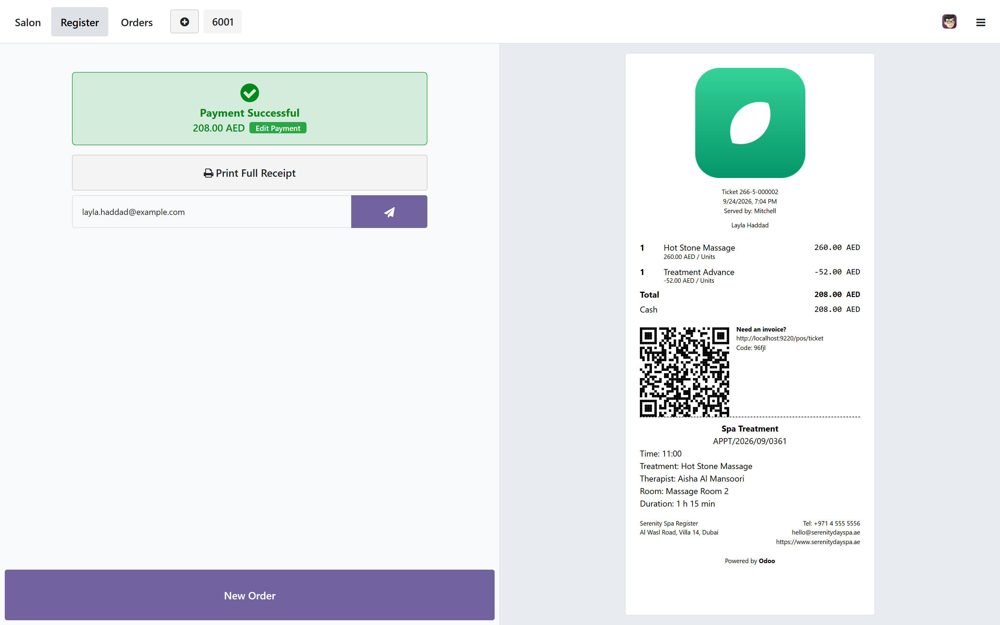
Reviews
A finished treatment shows a star button on its card. It opens the review popup: one to five stars and what the guest said. With Ask for a Review on Done on, the popup opens by itself when the treatment is marked Done.
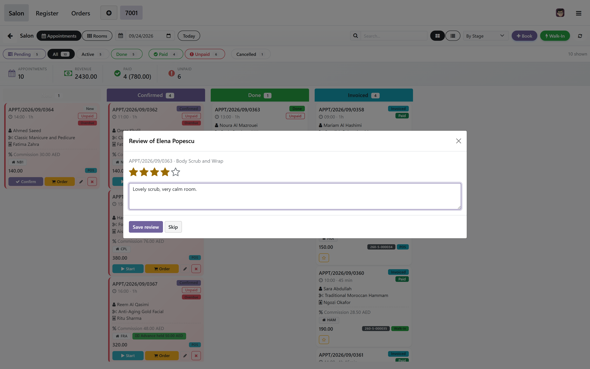
A treatment takes one review, and only once it is done. Reviews are listed under Spa > Reviews, with a pivot by therapist and rating. A therapist can read the reviews written about them and no one else's; reception reads them all; only a manager can delete one.
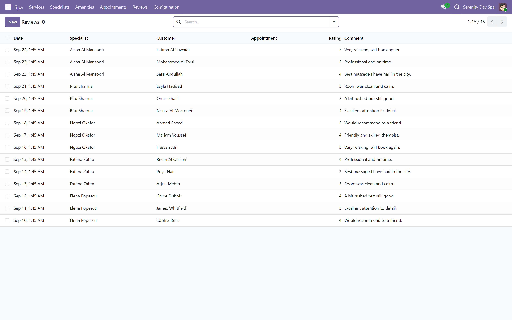
Cancelling a booking
Press the cross on the card. The room and the therapist are free again at once. If the guest paid an advance, the card shows Refund advance: it opens an order that pays the advance back, and the booking's advance is then settled.
The back office
Spa > Bookings opens the spa's bookings on the calendar, All Bookings as a list. They are the salon's own appointments, so the salon's reports, commission earnings and invoicing cover them. Closed till sessions are Point of Sale's own.
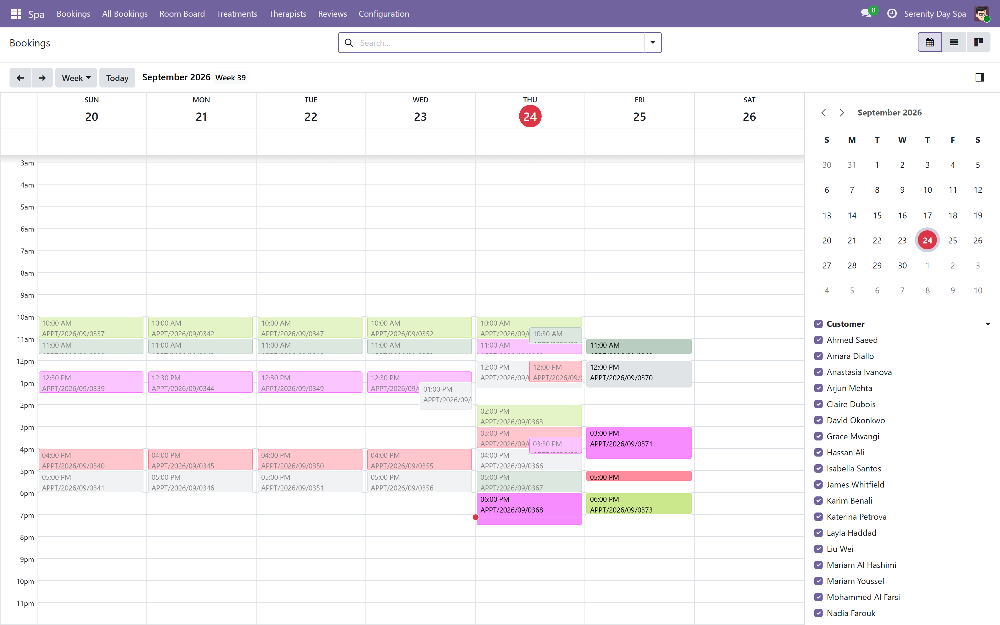
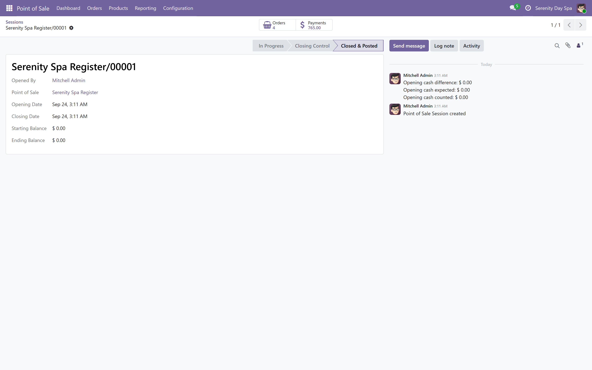
Upgrading from 19.0.1.x
Version 19.0.1.x kept its own services, specialists, rooms, slots, commission plans, brands and appointments. Upgrading to 19.0.2.0.0 copies every one of them onto the salon's records: services with their price, length, slots and advance; specialists onto employees, linked by name to an employee who already exists; rooms onto rooms and stations; appointments with their room, therapist, state, amount and the advance the guest paid; reviews onto the new therapist; the till's orders onto the new bookings; and each booking's chatter. The copy is checked by row counts and by money totals before anything is renamed, and if it does not add up the upgrade stops with nothing changed. The old tables are kept, renamed with a _legacy suffix, and wt_spa_legacy_map records every old id against its new one.
What it does not do
- It keeps no services, therapists, rooms or bookings of its own; those are WT Salon Management's.
- It does not pay commission out; it is worked out and reported by the salon module.
- An advance carries no tax. If your country taxes deposits when taken, ask your accountant before using it.
- Online booking for guests is WT Salon Management's portal, not this module.
Common questions
Can a till be a salon till and a spa till at once? A spa till is a salon till with the spa layer on. A till that is not a spa keeps POS Salon's own board.
Does a spa till still sell retail products? Yes, the product screen is the normal Point of Sale.
What happens if two tills book the same room at once? The second is refused with the name of the booking in the way.
Can I take part of the advance? Yes: the money button on the card takes what is still due, and two part payments add up. The bill always takes off exactly what was paid.